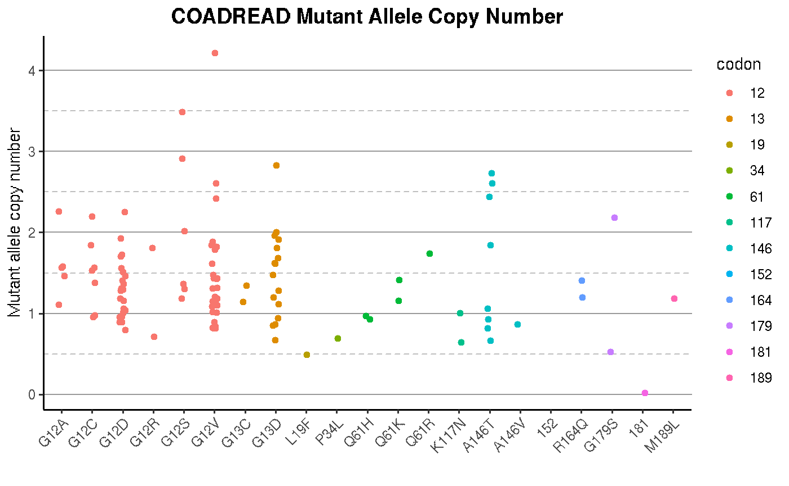
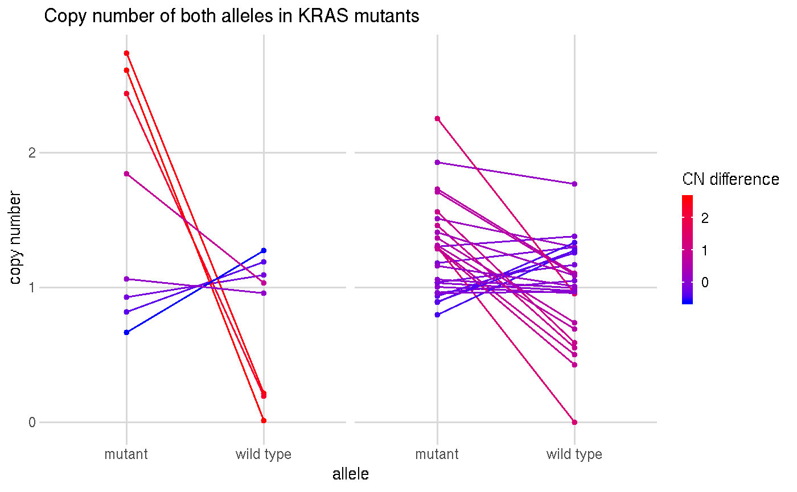
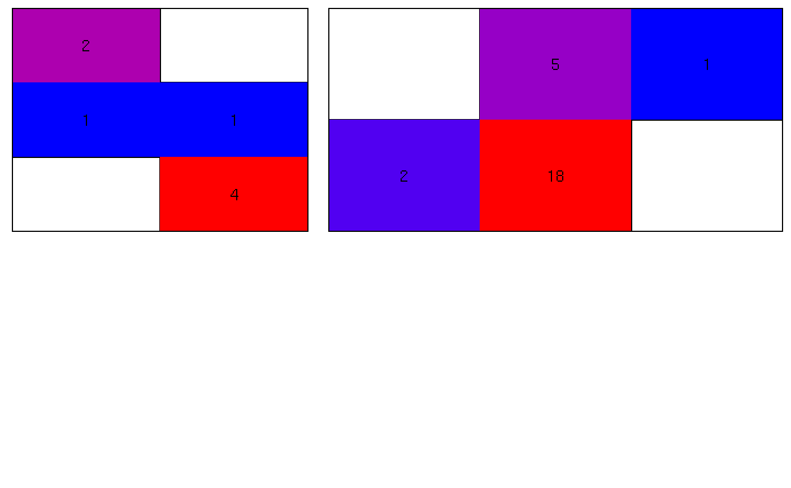

d01-plotresults.RmdLoad libraries
library(dplyr)
#>
#> Attaching package: 'dplyr'
#> The following objects are masked from 'package:stats':
#>
#> filter, lag
#> The following objects are masked from 'package:base':
#>
#> intersect, setdiff, setequal, union
library(readr)
library(tibble)
library(stringr)
library(magrittr)
library(gridExtra)
#>
#> Attaching package: 'gridExtra'
#> The following object is masked from 'package:dplyr':
#>
#> combine
library(ggplot2)
# library(KrasAlleleCna)
devtools::load_all()
#> Loading KrasAlleleCna
#>
#> Attaching package: 'testthat'
#> The following objects are masked from 'package:magrittr':
#>
#> equals, is_less_than, not
#> The following object is masked from 'package:dplyr':
#>
#> matchesEstablish path variables:
Per the scope of this study, only the COAD and READ data were retained. The number of samples with each allele were counted. Finally, the rare negative numbers were set to 0.
cn_tib <- allele_data_filt %>%
filter(project_id %in% c("TCGA-COAD", "TCGA-READ")) %>%
group_by(aa_mod) %>%
mutate(allele_count = n_distinct(common_id)) %>%
ungroup() %>%
mutate(cn_mut = ifelse(cn_mut < 0, 0, cn_mut),
cn_wt = ifelse(cn_wt < 0, 0, cn_wt),
codon = as.numeric(str_extract(aa_mod, "[:digit:]+")))cn_tib %>%
mutate(aa_mod = forcats::fct_reorder(aa_mod, codon)) %>%
ggplot(aes(x = aa_mod, y = cn_mut)) +
geom_jitter(aes(color = as.factor(codon)), width = 0.1, height = 0) +
labs(x = "",
y = "Mutant allele copy number",
title = "COADREAD Mutant Allele Copy Number",
color = "codon") +
theme_classic() +
theme(panel.grid.major.y = element_line(color = "grey60"),
panel.grid.minor.y = element_line(color = "grey75", linetype = 2),
plot.title = element_text(hjust = 0.5, face = "bold", size = 14),
axis.text.x = element_text(angle = 45, hjust = 1))
#> Warning: Removed 20 rows containing missing values (geom_point).
# colors
red_col <- "red"
blue_col <- "blue"
cn_tib %>%
filter(aa_mod %in% c("A146T", "G12D")) %>%
mutate(diff = cn_mut - cn_wt) %>%
ggplot() +
facet_grid(. ~ aa_mod) +
geom_segment(aes(x = "mutant", xend = "wild type",
y = cn_mut, yend = cn_wt,
color = diff)) +
geom_point(aes(x = "mutant", y = cn_mut, color = diff), size = 1) +
geom_point(aes(x = "wild type", y = cn_wt, color = diff), size = 1) +
scale_color_gradient(low = blue_col, high = red_col) +
theme(panel.background = element_rect(fill = "white"),
panel.grid.major = element_line(color = "grey85"),
legend.key.height = unit(0.2, "in"),
legend.key.width = unit(0.1, "in"),
axis.ticks = element_line("grey85"),
strip.background = element_blank(),
strip.text.x = element_blank()) +
labs(x = "allele", y = "copy number",
title = "Copy number of both alleles in KRAS mutants",
color = "CN difference")
#> Warning: Removed 10 rows containing missing values (geom_segment).
#> Warning: Removed 10 rows containing missing values (geom_point).
#> Warning: Removed 10 rows containing missing values (geom_point).
a146t_heat <- cn_tib %>%
filter(aa_mod == "A146T") %>%
mutate(cn_mut_round = round(cn_mut),
cn_wt_round = round(cn_wt)) %>%
group_by(aa_mod, cn_mut_round, cn_wt_round) %>%
summarise(num = n_distinct(common_id)) %>%
ungroup() %>%
group_by(aa_mod) %>%
mutate(freq = num / n()) %>%
ungroup() %>%
na.omit() %>%
ggplot(aes(x = cn_wt_round, y = cn_mut_round)) +
geom_tile(aes(fill = freq)) +
geom_text(aes(label = num), color = "black") +
scale_fill_gradient(low = blue_col, high = red_col) +
theme(panel.grid.major = element_blank(),
panel.grid.minor = element_line(color = "black", size = 0.5),
legend.position = "none",
panel.background = element_rect(fill = "white"),
panel.border = element_rect(color = "black", fill = NA, size = 0.5),
axis.ticks = element_blank(),
axis.title = element_blank(),
axis.text = element_blank()) +
labs(x = "WT allele copy number",
y = "mutant allele copy number") +
scale_y_continuous(expand = c(0, 0),
breaks = c(0, 1, 2, 3),
minor_breaks = seq(0.5, 3.5, 0.5)) +
scale_x_continuous(expand = c(0, 0),
breaks = c(0, 1, 2, 3),
minor_breaks = seq(0.5, 3.5, 0.5))
g12d_heat <- cn_tib %>%
filter(aa_mod == "G12D") %>%
mutate(cn_mut_round = round(cn_mut),
cn_wt_round = round(cn_wt)) %>%
group_by(aa_mod, cn_mut_round, cn_wt_round) %>%
summarise(num = n_distinct(common_id)) %>%
ungroup() %>%
group_by(aa_mod) %>%
mutate(freq = num / n()) %>%
ungroup() %>%
na.omit() %>%
ggplot(aes(x = cn_wt_round, y = cn_mut_round)) +
geom_tile(aes(fill = freq)) +
geom_text(aes(label = num), color = "black") +
scale_fill_gradient(low = blue_col, high = red_col) +
theme(panel.grid.major = element_blank(),
panel.grid.minor = element_line(color = "black", size = 0.5),
legend.position = "none",
panel.background = element_rect(fill = "white"),
panel.border = element_rect(color = "black", fill = NA, size = 0.5),
axis.ticks = element_blank(),
axis.title = element_blank(),
axis.text = element_blank()) +
labs(x = "WT allele copy number",
y = "mutant allele copy number") +
scale_y_continuous(expand = c(0, 0),
breaks = c(0, 1, 2, 3),
minor_breaks = seq(0.5, 3.5, 0.5)) +
scale_x_continuous(expand = c(0, 0),
breaks = c(0, 1, 2, 3),
minor_breaks = seq(0.5, 3.5, 0.5))
a146t_grob <- ggplotGrob(a146t_heat)
g12d_grob <- ggplotGrob(g12d_heat)
grid.arrange(a146t_grob, g12d_grob, nrow = 2, widths = c(2, 3))